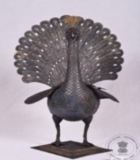
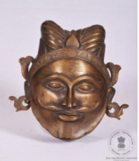
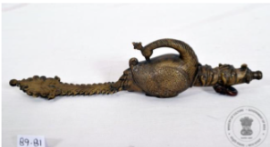
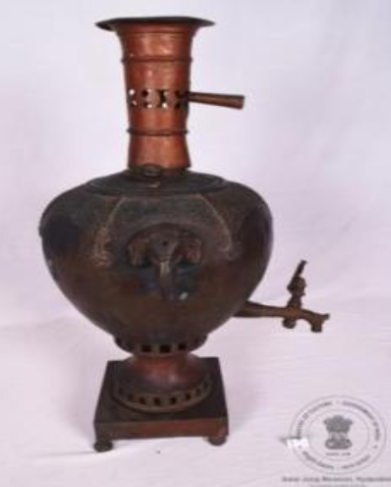
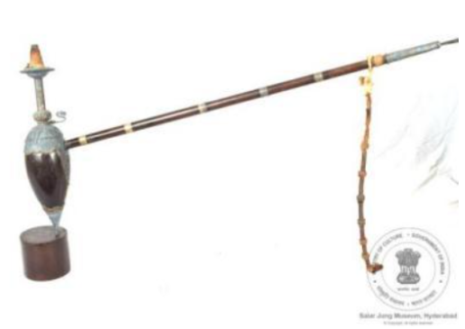
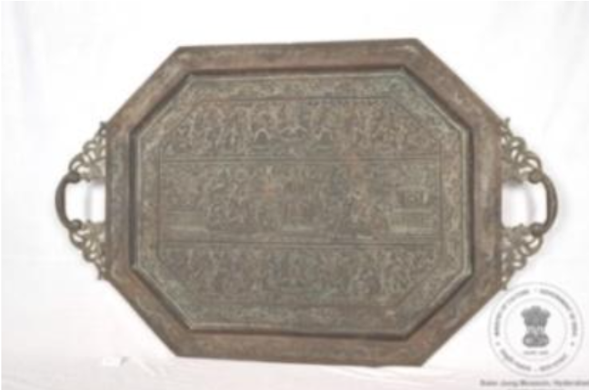
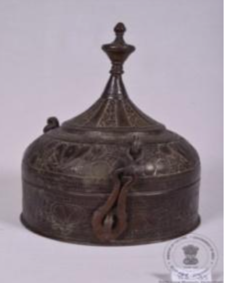
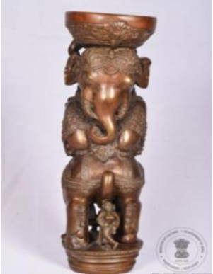
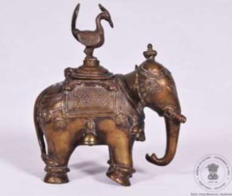
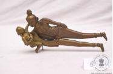

यह पारंपरिक भारतीय जलपात्र (लोटा) गुजरात शैली का है। यह पीतल से बना है और इसकी सतह पर देवी-देवताओं की आकृतियाँ तथा सुंदर अलंकरण उकेरे गए हैं। इसका आधार समतल है, जिससे इसे आसानी से किसी भी सतह पर रखा जा सकता है। इसका उपयोग मंदिरों, घरों तथा विभिन्न धार्मिक अनुष्ठानों में किया जाता है।
इस लोटे का शरीर गोलाकार है, इसकी गर्दन छोटी है और मुख गोल तथा बाहर की ओर फैला हुआ है। इसकी पूरी बाहरी सतह पर ज्यामितीय आकृतियाँ, पुष्प-बेल की सजावट तथा अन्य अलंकरण अंकित हैं। बीच में ताँबे के रंग की एक प्रमुख पट्टी है, जिस पर बारह वर्गाकार खंडों में हिंदू पौराणिक कथाओं से संबंधित आकृतियाँ उकेरी गई हैं। इसके नीचे की सबसे चौड़ी पट्टी पर बेल-बूटों, पुष्पों और उड़ते हुए पक्षियों की सुंदर नक्काशी की गई है। यह पात्र ईस्वी सन् 19वीं शताब्दी का माना जाता है।

अभिग्रहण संख्या: XLIV-315
2. मयूराकार सुगंध पात्र
यह मयूर के आकार का सुगंध पात्र चाँदी से बना है। भारतीय परंपरा में मयूर सौंदर्य, प्रेम और अनुराग का प्रतीक माना जाता है। यह खड़े हुए मयूर के रूप में बनाया गया है, जो चौकोर आधार पर स्थित है। इसके फैले हुए पंख और पूँछ अलग किए जा सकते हैं। मयूर की चोंच में दो साँप बने हैं। इसके भीतर एक चौकोर डिब्बी है, जिसके ढक्कन की पकड़ मयूर की कलगी के रूप में बनाई गई है। इसमें सुगंधित रुई रखी जाती थी। इस सुगंध पात्र में दो अंडाकार तश्तरियाँ हैं, जिनमें अलग-अलग खाने बने हैं। पीछे की ओर बने खोखले भाग में कुंडी वाला ढक्कन लगा है। पूरे पात्र पर उभरी हुई मयूर-पंखों की सुंदर नक्काशी की गई है। यह सुगंध पात्र हैदराबाद, भारत का है और इसका निर्माण ईस्वी 19वीं शताब्दी में हुआ माना जाता है।

अभिग्रहण संख्या: ACQ-86-18
3. पानदान
यह पीतल का अंडाकार पानदान है। इसका ढक्कन मुखौटे के आकार का है, जिसमें दाढ़ी और मूँछों वाले पुरुष का चेहरा बना है। पुरुष ने पगड़ी पहन रखी है। पगड़ी पर बीच में फूल के आकार का सरपेच उकेरा गया है और उसके दोनों ओर बेल-बूटों की नक्काशी की गई है। ढक्कन कुंडी के माध्यम से नीचे के भाग से जुड़ा हुआ है। चेहरे के गोल कानों के आभूषण ही इसके पकड़ने के हत्थों का कार्य करते हैं। सरपेच के दोनों ओर बेल जैसी दो उभरी हुई आकृतियाँ बनी हैं। इसका निचला भाग सादा और समतल है। सरपेच के बीच में पत्ती जैसी उभरी हुई आकृति भी बनी है। यह पानदान उत्तर भारत का है और इसका निर्माण 19वीं शताब्दी ईस्वी का माना जाता है।

अभिग्रहण संख्या: ACQ-89-81
4. बारूददानी
यह बारूद रखने का पात्र (बारूददानी) पीतल से बना है। इसका आकार एक मोर के समान है, जिसकी लंबी गर्दन मुड़कर उसकी पीठ को छूती है और लंबी फैली हुई पूँछ इसे आकर्षक रूप देती है। मोर की गर्दन के नीचे सामने की ओर लगभग दो इंच लंबी नली बनाई गई है, जिसके माध्यम से इसमें बारूद भरी जाती थी। इस नली का अग्रभाग दो पशुओं के सिरों के रूप में बनाया गया है, जो एक नोज़ल को थामे हुए दिखाई देते हैं। मोर के सिर पर सुंदर कलगी बनी हुई है तथा दोनों ओर पशु-आकृतियों के हाथों में स्वतंत्र रूप से घूमने वाले छल्ले लगे हैं। यह बारूददानी दक्षिण भारत की है और इसका काल 17वीं शताब्दी ईस्वी माना जाता है।

अभिग्रहण संख्या: ACQ-90-34
5. समोवर
समोवर ताँबे का बना है और उस पर सुंदर सुलेख तथा सजावटी आकृतियाँ उकेरी गई हैं। इसके अंदर पानी उबालने के लिए एक ताप-नली लगी होती है। ऊपर की ओर छिद्रयुक्त और हटाई जा सकने वाली धुआँ-चिमनी है तथा नीचे उबला हुआ पानी निकालने के लिए नल लगा है। ऊपरी भाग के नीचे छिद्रयुक्त आधार और राख रखने की तश्तरी है। यह चार गोल आधारों पर टिके चौकोर धातु के आधार पर रखा गया है। इसके ऊपरी भाग के षट्भुजाकार खंडों में पुष्प आकृतियाँ उकेरी गई हैं, जबकि निचले भाग के छह कलीनुमा खंडों में चीनी शैली की कुंजी आकृति बनी है। दोनों ओर हाथी के सिर के आकार के सजावटी हत्थे लगे हैं। यह समोवर भारत का है और इसका समय 18वीं शताब्दी ईस्वी का माना जाता है।

अभिग्रहण संख्या: ACQ-89-52
6. हुक्का
यह गहरे भूरे रंग का कली के आकार का हुक्का लकड़ी और चाँदी जड़ी धातु से बना है। इस पर चाँदी की सजावटी परत में पुष्प और ज्यामितीय आकृतियाँ उकेरी गई हैं। इसका बेलनाकार गला फूलदान जैसे भाग से निकलता है और ऊपर गोल चक्र पर समाप्त होता है। इसके ऊपरी भाग पर चाँदी का गोल ढक्कन लगा है। निचला भाग उल्टे फूल के आकार की चाँदी की सजावटी परत से ढका हुआ है। इसकी लंबी लकड़ी की नली पर चाँदी की पाँच पट्टियाँ लगी हैं। मुँह लगाने वाला भाग चाँदी का बना है, जिस पर फूल-बेल और ज्यामितीय आकृतियों की सजावट है। इसमें साँप के आकार का एक हत्था भी बना है। यह हुक्का भारत के दक्कन क्षेत्र का है और इसका निर्माण 19वीं शताब्दी ईस्वी का माना जाता है।

अभिग्रहण संख्या: ACQ-91-77
7. थाल
यह अष्टकोणीय थाल काँसे का बना है और इसके दोनों ओर पकड़ने के लिए हत्थे हैं। थाल के पूरे सामने वाले भाग पर देवी-देवताओं, मानव आकृतियों तथा पुष्प-बेलों की सुंदर नक्काशी की गई है। थाल में बनी तीन लंबी पट्टियों में ऊपर की पट्टी में भगवान गणेश के दोनों ओर भगवान कृष्ण और गोपियों की आठ आकृतियाँ हैं। बीच की पट्टी में भगवान ब्रह्मा या भगवान विष्णु के दोनों ओर भगवान कृष्ण की दस आकृतियाँ हैं। नीचे की पट्टी में गरुड़ के दोनों ओर भगवान कृष्ण और गोपियों की दस आकृतियाँ बनी हैं। इस पर की गई नक्काशी की शैली और विषयवस्तु राजस्थान की लघु चित्रकला में दर्शाए गए रासलीला के दृश्यों की याद दिलाती है। यह थाल राजस्थान, भारत का है और इसका निर्माण ईस्वी 19वीं शताब्दी में हुआ माना जाता है।

अभिग्रहण क्रमांक: ACQ-86-35
8. पानदान (खासदान)
यह धातु का गोलाकार पानदान (खासदान) है। इसमें गुंबदाकार ढक्कन लगा है, जो दो जंजीरयुक्त कब्जों, एक कुंडी और एक छल्ले से जुड़ा हुआ है। पात्र के निचले भाग पर उभरे हुए फूलों तथा फूलों की बेल की आकृतियाँ बनी हैं, जिनके दोनों ओर गोलाकार छिद्रयुक्त बिंदुओं की पट्टियाँ हैं। ढक्कन के निचले भाग पर उभरे हुए फूलों और फूलों की डंठलों की चौड़ी पट्टी बनी है। इसके ऊपरी भाग पर उभरे हुए पुष्पीय पौधों की आकृतियाँ हैं, जिन्हें सादी खड़ी पट्टियों द्वारा अलग-अलग किया गया है। ढक्कन के ऊपर कली के आकार का हत्था लगा है। यह खासदान दक्षिण भारत का है और इसका निर्माण 19वीं शताब्दी ईस्वी का माना जाता है।

अभिग्रहण संख्या: ACQ-86-11
9. वस्तु: पलंग का स्तंभ (पाया)
यह पलंग के पाए का सजावटी भाग है, जिसमें एक हाथी पर सिंह के आक्रमण का दृश्य दिखाया गया है। यह तांबे और पीतल से बना है। यह कलाकृति भारत के ओडिशा की है। इसमें हाथी अपने पिछले पैरों पर खड़ा है और उसका पूरा शरीर मुड़ा हुआ दिखाई देता है। हाथी के सिर के ऊपर लगे अर्धगोलाकार चक्र पर उभरी हुई आकृति में सिंह को दिखाया गया है। हाथी की पूँछ के पास एक नृत्य करती हुई स्त्री दिखाई गई है। पूँछ के दूसरी ओर पगड़ी पहने दो घुड़सवार एक-दूसरे से टकराते हुए दिखाए गए हैं। यह टक्कर गैंडे द्वारा घोड़ों पर किए गए आक्रमण के कारण हुई है। यह पलंग का पाया ईस्वी 19वीं शताब्दी का है।

प्राप्ति क्रमांक: ACQ-87-44
10. हाथी के आकार की दवात
यह हाथी के आकार की पीतल की दवात है। हाथी की पीठ पर स्याही रखने का पात्र बना है, जिसे मोर के आकार वाले कुंडीदार ढक्कन से बंद किया जाता है। इसके चार पैर हैं। हाथी के कटे हुए दाँत हैं और इसे घंटियों तथा अन्य अलंकरणों से सुंदर ढंग से सजाया गया है। इसकी पीठ पर कालीन जैसी सजावट बनी हुई है। हाथी के चारों पैरों में पायल जैसी आकृति बनी है। इसकी सूँड का सिरा बाईं ओर भीतर की ओर मुड़ा हुआ है। इसकी लंबी और सीधी पूँछ का सिरा मुड़कर दाएँ पिछले पैर पर टिका है। हाथी की पीठ पर चारों कोनों में फ्लेर-डी- लिस अलंकरण बना है। यह दवात भारत की है और इसका निर्माण 20वीं शताब्दी ईस्वी का माना जाता है।

प्राप्ति क्रमांक: ACQ-85-26
11. सुपारी काटने का औजार
यह सुपारी काटने का औजार पीतल का बना है। इसका आकार भगवान विष्णु और देवी श्रीदेवी की आकृतियों के रूप में बनाया गया है, जो इस औजार के दो भाग हैं। इसके हत्थे का निचला भाग भगवान विष्णु के पैरों के रूप में बनाया गया है। इसमें भगवान विष्णु को देवी श्रीदेवी को उठाकर अपने दाहिने हाथ से थामे हुए दिखाया गया है। औजार का दाहिना भाग भगवान विष्णु को दर्शाता है, जिसके नीचे काटने वाला फल लगा है। देवी श्रीदेवी को दाहिने हाथ में कमल की कली धारण किए हुए तथा भगवान विष्णु द्वारा दाहिने हाथ से उठाए हुए दिखाया गया है। यह सुपारी काटने का औजार गुजरात, भारत का है और इसका निर्माण 19वीं शताब्दी ईस्वी का माना जाता है।